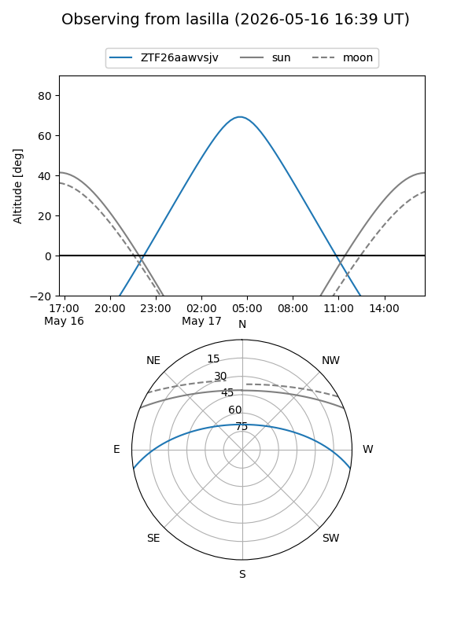
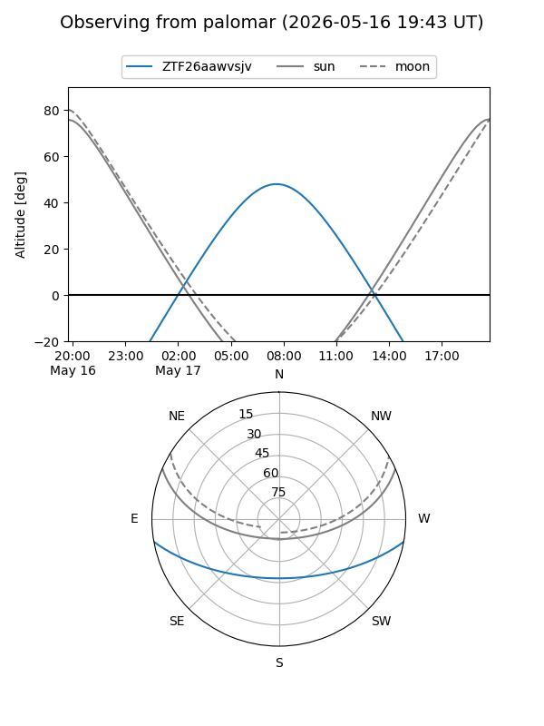
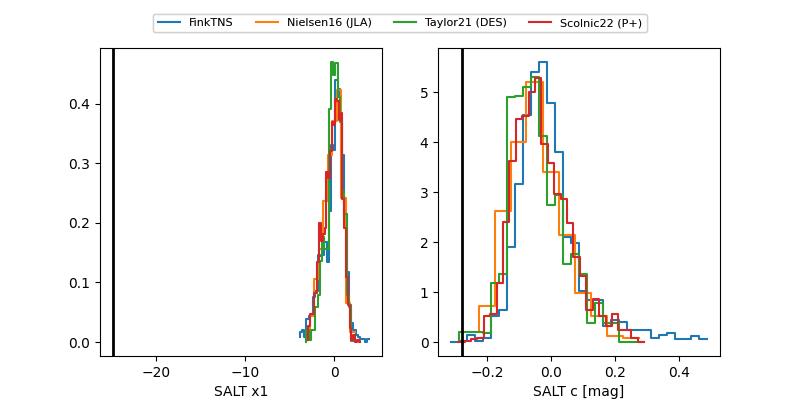

ZTF26aawvsjv
Target ZTF26aawvsjv at 2026-05-17 09:54
Aliases and brokers:
FINK: link
Lasair: link
ALeRCE: link
alt names
ZTF26aawvsjv (ztf,fink_ztf)
Coordinates:
equatorial (ra, dec) = 231.7268,-8.51484
equatorial (HMS+DMS) = 15:26:54.44,-08:30:53.42
galactic (l, b) = (355.0453,+38.15507)
Flags:
Photometry:
last ztfg=20.17, ztfr=20.14
2 ztfg, 1 ztfr detections
Lightcurve
Visibility


Additional plots
